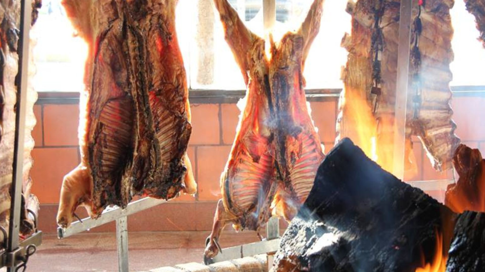

La provincia de San Luis, ubicada en la región de Cuyo en el centro-oeste de Argentina, se destaca por su tranquilidad, paisajes naturales y crecimiento sostenido.
Su capital es la ciudad de San Luis, y tiene una población aproximada de 500.000 habitantes.
El territorio fue originalmente habitado por pueblos originarios como los comechingones y huarpes. La ciudad fue fundada en 1594 y refundada en 1689.
San Luis apoyó la causa de la independencia y se constituyó como provincia autónoma en 1820.
Entre sus principales atractivos naturales se encuentran el Parque Nacional Sierra de las Quijadas, Potrero de los Funes y la Villa de Merlo, conocida por su microclima.
Su economía se basa en la agricultura, la industria, la ganadería y el turismo. El clima es mayormente seco, con veranos calurosos e inviernos frescos.
Arte y la cultura
La riqueza cultural de San Luis combina la vasta historia de sus pueblos originarios con obras literarias y artísticas de reconocidas personalidades locales.
La provincia atesora en museos y en centros culturales el legado de su historia, revalorizando el pasado, trabajando en el presente y promoviendo sus raíces culturales.
Los festivales locales y las ferias gastronómicas conservan las costumbres y valores de San Luis, como el reservorio cultural que pueden disfrutar aquellos que visitan la provincia.
Conectá con la gastronomía
San Luis se caracteriza por la diversidad en su gastronomía, destacándose el chivito con chanfaina y distintos productos regionales como dulces y variedad de quesos.
Estas experiencias invitan a conectar con la identidad de las distintas regiones de la provincia, desde elaboraciones de alta cocina hasta preparaciones artesanales.
